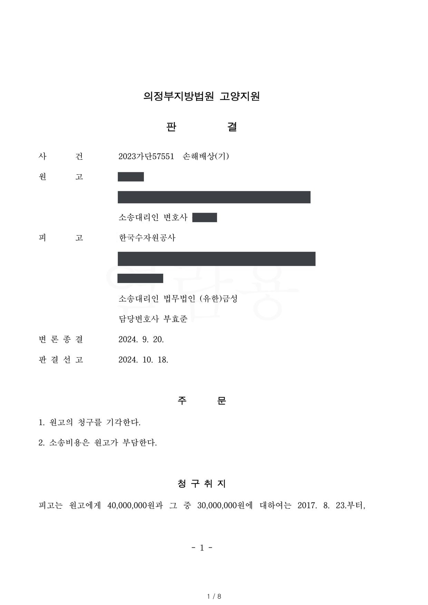

환매권 통지의무 위반을 이유로 한 손해배상 청구소송
의정부지방법원 고양지원 2023가단57551 · 담당변호사 부효준
판결문

사건의 요지
공익사업을 위해 취득한 토지에 관하여 환매권 발생 사실을 통지하지 않았다는 이유로 제기된 손해배상 청구에서, 환매권의 발생 요건과 손해의 인정 여부가 다투어진 사건입니다.
사건의 주요 내용
피고는 2008년 3월 국가산업단지 개발사업 중 2단계 개발사업의 시행자로 지정·고시된 사업시행자이고, 원고가 지분을 가진 토지 8필지는 2008년 9월 이 개발사업 구역에 편입·고시되었습니다. 피고는 산업입지법 제22조에 따라 그중 7필지를 2011년 8월 협의취득하고 나머지 1필지를 2012년 2월 수용하여 각 지분이전등기를 마쳤습니다. 개발사업의 실시계획은 2011년 9월 승인·고시되었고, 2015년 12월에는 개발기간이 2030년까지로 변경·고시되었습니다.
피고는 사업구역을 동측·남측·서측지구로 나누어 2011년 11월 동측지구, 2017년 3월 남측지구에서 차례로 공사를 시작하였으나, 원고의 토지가 속한 서측지구에서는 지장물조사와 폐기물 처리만 하였고 아직 공사에 착수하지 않은 상태였습니다.
원고는 피고가 취득일부터 5년 이내에 취득한 토지 전부를 사업에 이용하지 않아 환매권이 발생하였는데도 사업시행자인 피고가 이를 통지하지 않아 환매권을 행사하지 못하였다고 주장하면서, 불법행위로 인한 손해배상채무의 일부로서 4,000만 원과 지연손해금의 지급을 구하였습니다. 부효준 변호사는 피고 사업시행자를 대리하였습니다.
원고의 주장
- 피고가 취득일부터 5년 이내에 취득한 토지의 전부를 해당 사업에 이용하지 아니하였으므로 토지보상법 제91조 제2항에 따라 원고에게 환매권이 발생하였고, 사업시행자인 피고가 이를 지체 없이 통지하지 않은 탓에 환매권을 행사하지 못하였으므로 불법행위에 따른 손해를 배상하여야 한다고 주장하였습니다.
- 원고의 토지는 이미 공사가 시작된 동측·남측지구와 '일단의 토지'에 해당하지 않으며, '일단의 토지'의 범위를 넓게 해석하는 것은 환매권을 보장하는 입법취지를 묵살하는 행정편의적 발상이라고 주장하였습니다.
부효준 변호사의 주장
- 동측·남측·서측지구는 하나의 개발사업 계획에 따라 순차적으로 공사가 진행되고 있는 '일단의 토지'이므로, 서측지구에서 아직 공사에 착수하지 않았다는 사정만으로 취득한 토지 '전부'를 사업에 이용하지 않았다고 볼 수 없다고 반박하였습니다.
- 이러한 주장은 토지 전부를 사업에 이용하였는지를 사업시행자의 입장에서 해당 공익사업에 이용될 일단의 토지 전부를 기준으로 판단하고 토지소유자나 필지별로 판단하지 않는다는 대법원 판례(1996. 2. 9. 선고 94다46695 판결)에 기초한 것으로, 환매권이 발생하지 않은 이상 통지의무 위반을 전제로 한 손해배상책임도 성립할 수 없다는 취지였습니다.
법원의 판단
법원은 구 토지보상법 제91조 제1항·제2항과 관련 대법원 판례를 판단 기준으로 삼았습니다. 토지 전부를 사업에 이용하지 않았는지는 사업시행자의 입장에서 해당 공익사업에 이용될 일단의 토지 전부를 기준으로 판단하고 취득 당시의 소유자나 필지별로 판단하지 않으며(대법원 94다46695 판결), 제91조 제2항은 사업시행자가 실제로 이용하지도 않을 토지를 미리 취득하여 두는 것을 막으려는 취지이고(대법원 94다41690 판결 등), '당해 사업'은 협의취득·수용의 목적이 된 구체적인 특정 공익사업을 말한다(대법원 2018다282183 판결)는 것입니다.
법원은 서측지구가 미착공 상태인 사실은 인정하면서도, 이 사건 개발사업은 동측·남측·서측지구 전체를 하나의 사업으로 보아 실시계획 승인을 받은 것이고 지구별로 나누어 승인받은 것이 아니며, 2021년 12월 기준 전체 공정률이 35%(동측지구 99%, 남측지구 41%)이고 서측지구에서도 지장물조사와 폐기물 처리가 이루어졌다는 점을 들었습니다.
또한 사업기간이 2030년까지로서 피고가 2011년부터 동측·남측·서측지구의 순서로 단계별 조성·공급을 계획하고 순차적으로 공사를 진행하고 있어 이용하지 않을 토지를 미리 취득한 결과라고 보기 어렵고, 산업입지법 제2조 제8호의 '산업단지'는 포괄적 계획에 따라 지정·개발되는 일단의 토지로서 그 '일단의 토지'는 지리적·물리적 관점이 아니라 산업기능이라는 기능적 관점에서 파악해야 한다고 보았습니다.
이러한 사정을 종합하여 법원은, 피고가 취득일부터 5년 이내에 취득한 '토지의 전부'를 '해당 사업'에 이용하지 않아 원고에게 환매권이 발생하였다거나 피고가 고의 또는 과실로 환매권 발생의 통지·공고 의무를 게을리하였다고 보기 어렵다고 판단하고 원고의 청구를 받아들이지 않았습니다. 소송비용은 원고가 부담하게 되었습니다.
공공용지의취득및손실보상에관한특례법 제9조 제2항은 제1항과는 달리 '취득한 토지 전부'가 공공사업에 이용되지 아니한 경우에 한하여 환매권을 행사할 수 있고 그 중 일부라도 공공사업에 이용되고 있으면 나머지 부분에 대하여도 장차 공공사업이 시행될 가능성이 있는 것으로 보아 환매권의 행사를 허용하지 않는다고 규정함으로써 제1항의 경우보다 환매권 행사의 요건을 가중하고 있는바, 위 규정상의 이용하지 아니하였는지 여부는 필요한 토지를 취득한 사업시행자의 입장에서 당해 공공사업에 이용될 일단의 토지의 전부를 기준으로 판단할 것이고, 취득 당시의 토지 등의 소유자나 해당 토지의 필지별로 판단할 것은 아니다(대법원 1996. 2. 9. 선고 94다46695 판결 참조).
의정부지방법원 고양지원 2023가단57551 판결 이유 '2. 나. 관련법리 등 — 2) 관련법리'
구 토지보상법(2011. 8. 4. 법률 제11017호로 개정되기 전의 것) 제91조 제1항에 따른 환매권은 당해 사업의 폐지·변경 기타의 사유로 인하여 취득한 토지 등의 전부 또는 일부가 필요 없게 된 때에 행사할 수 있다. 여기서 '당해 사업'이란 협의취득 또는 수용의 목적이 된 구체적인 특정의 공익사업을 말한다(대법원 2021. 9. 30. 선고 2018다282183 판결 참조).
의정부지방법원 고양지원 2023가단57551 판결 이유 '2. 나. 관련법리 등 — 2) 관련법리'
그러나 앞서 열거한 증거에 을 제4, 5, 6호증(각 가지번호 포함)의 각 기재와 변론 전체의 취지를 종합하여 인정되는 아래와 같은 사실 내지 사정들을 위 관련법령과 관련법리에 비추어 보면, 위 인정사실만을 들어 피고가 취득일로부터 5년 이내에 취득한 '토지의 전부'를 '해당 사업'에 이용하지 아니하여 원고에게 환매권이 발생되었거나 피고가 고의 또는 과실로 환매권 발생과 관련하여 원고에게 통지 내지 공고할 의무를 게을리하였다고 보기는 어렵다.
1) '해당 사업'이란 토지의 협의취득 등의 목적이 된 구체적인 특정 공익사업을 가리키는 것인데, 이 사건에서는 이 사건 개발사업이 이에 해당한다. 이 사건 개발사업은 동측지구, 남측지구, 서측지구 전체를 아울러 하나의 사업으로 보아 실시계획 승인을 받은 것이지, 동측지구 개발사업, 남측지구 개발사업, 서측지구 개발사업으로 분할하여 각각 실시계획 승인을 받은 것이 아니다.
의정부지방법원 고양지원 2023가단57551 판결 이유 '2. 다. 판단'
※ 판결 이유 가운데 이 사건의 판단 기준이 된 부분을 그대로 옮긴 것으로, 당사자 이름 등은 가렸습니다.
이 사건이 보여 주는 것
토지보상법 제91조 제2항의 환매권은 사업시행자가 취득일부터 5년 안에 취득한 토지 '전부'를 사업에 이용하지 않은 경우에 생기는데, 이때 '전부'인지는 필지나 소유자별이 아니라 사업시행자가 그 공익사업에 쓰려는 일단의 토지 전체를 기준으로 봅니다. 여러 지구로 나누어 단계적으로 조성하는 대규모 산업단지에서 자기 땅이 속한 지구만 공사가 늦어졌다는 사정만으로는 환매권이 발생하지 않는다는 점을 이 판결은 보여 줍니다.
환매권 통지의무 위반을 이유로 한 손해배상 청구는 환매권이 실제로 발생하였음을 전제로 합니다. 사업시행자로서는 실시계획 승인의 단위, 지구별 공정률과 단계별 조성계획, 미착공 지구에서 이루어진 준비작업 등을 증거로 정리하여 '하나의 사업'임을 밝히는 것이 방어의 핵심이 됩니다.
비슷한 처분을 받으셨다면
행정처분은 처분이 있음을 안 날부터 90일 이내에 행정심판이나 취소소송으로 다투어야 하고, 기간이 지나면 돌이킬 수 없는 처분은 집행정지를 서둘러야 합니다. 처분서를 받은 날짜부터 확인해 드립니다.